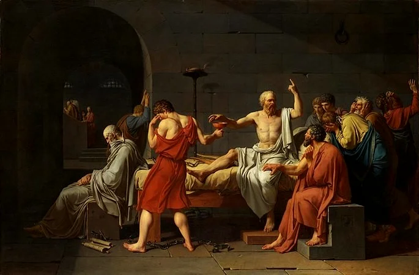

The Beauty, The Symmetry and The Aesthetics
"No man has the right to be an amateur in the matter of physical training.
It is a shame for a man to grow old without seeing the beauty and strength of which his body is capable."
-Socrates

Beauty is one of the things that has been relativized in recent years; we used to know when someone or something was beautiful, but now the world wants us to believe that anything is beautiful and everything is acceptable, and that we can live a bad life because we will die anyway, poor are those who think like this, they have to unsderstand that beauty is a mathematical principle, it comes from symmetry and brings us aesthetics. Our body is an awesome machine, and we can reach its infinite potential by taking care of it: by eating healthy, constantly lifting weights, resting enough, and not putting anything into it that will harm it, including listening to bad music, watching bad movies, and keeping bad habits. We are the owners of our fate, and we are made in the image of God.